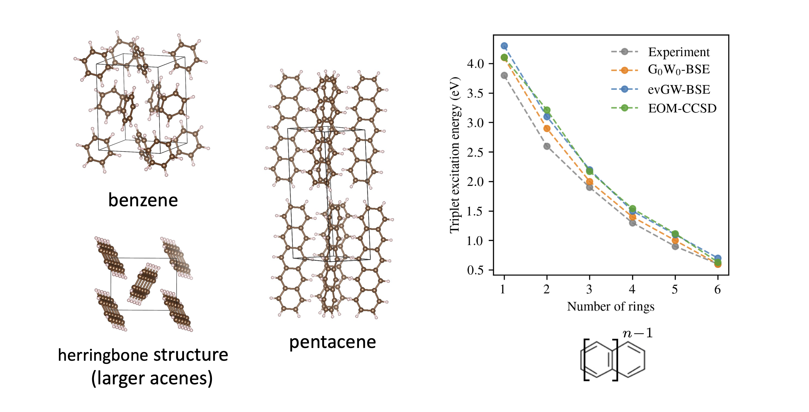
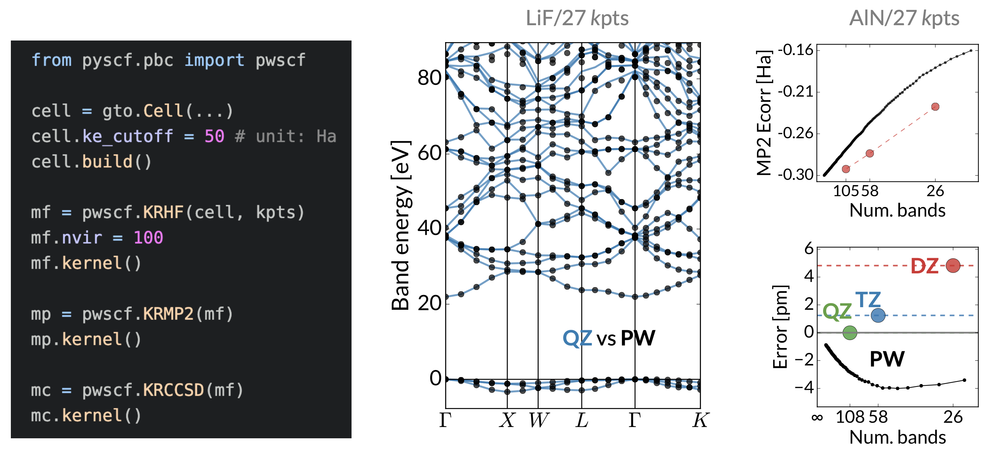
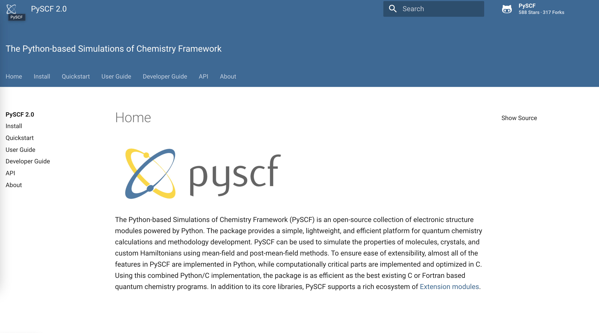
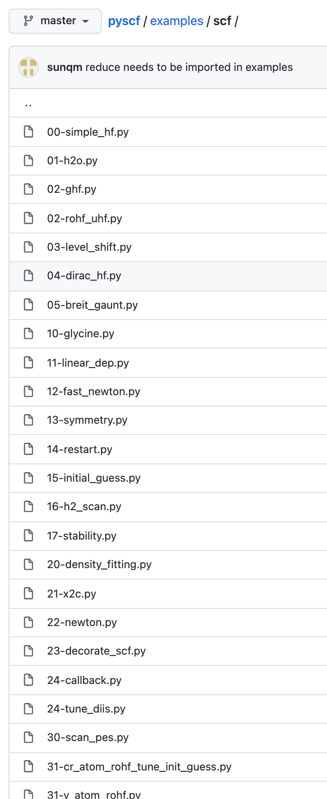
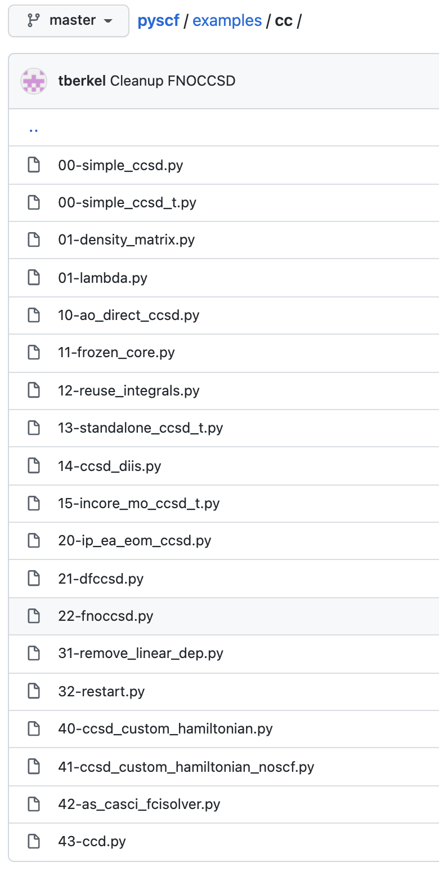
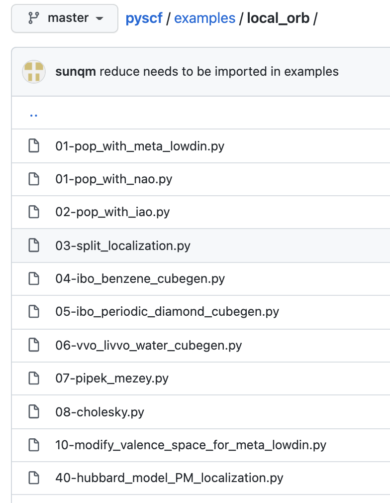
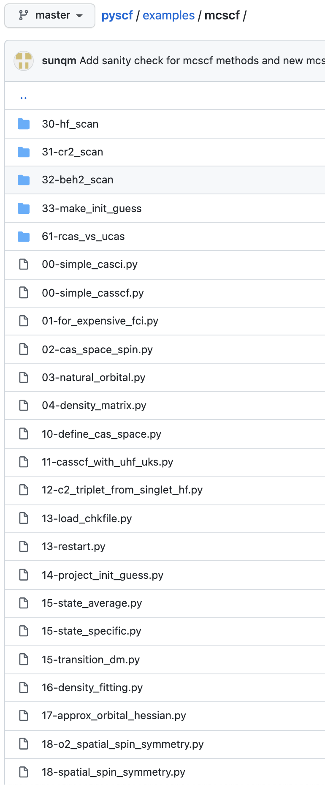
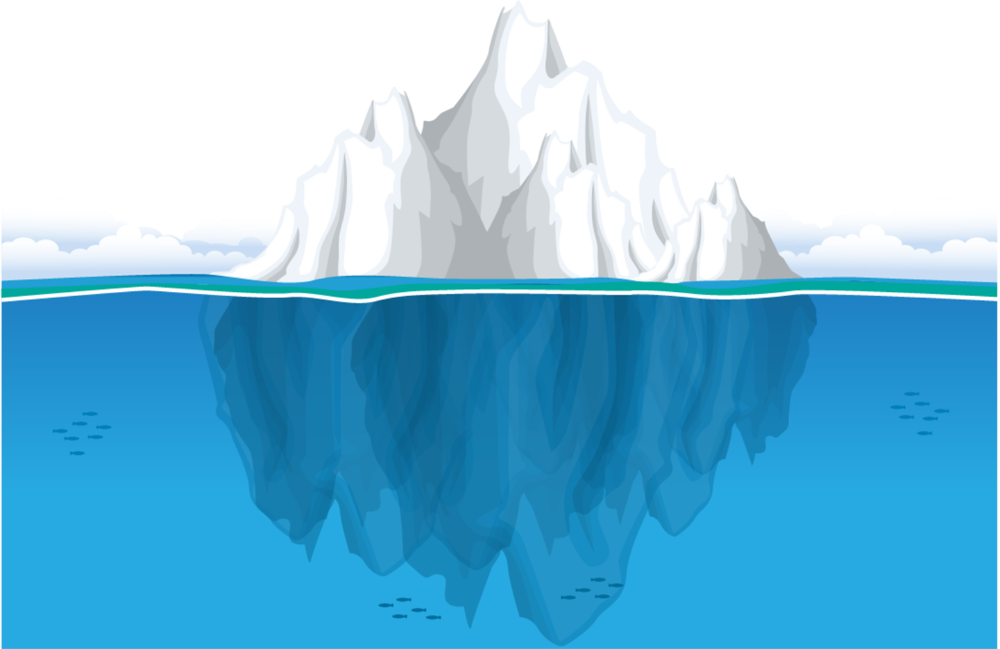

Python Simulations of Chemistry Framework
Credit/Thank You
Board of Directors
- Timothy Berkelbach (Columbia and Flatiron Institute)
- Garnet Chan (Caltech)
- Sandeep Sharma (CU Boulder)
- Alexander Sokolov (Ohio State)
- Qiming Sun (Axiomquant LLC)
Maintainers
- Zhihao Cui (Caltech)
- Yang Gao (Caltech)
- James Smith (Flatiron Institute)
- Xiao Wang (UC Santa Cruz)
- Susi Lehtola (MolSSI)
Outline
- What is PySCF?
- Feature Highlights
- Installation
- Open-source community and documentation
What does PySCF do?
Mostly generic two-body Hamiltonians: \[ \hat{\text{H}} = \sum_{pq} h_{pq} \hat{a}_p^\dagger \hat{a}_q + \sum_{pqrs} V_{pqrs} \hat{a}_p^\dagger \hat{a}_q \hat{a}_r^\dagger \hat{a}_s \]Special forms (e.g. sparsity of V) are rarely exploited.
PySCF calculates \(h_{pq} \) and \( V_{pqrs} \) or users can provide them
Several basis options: Gaussian-type orbitals (GTOs) for molecules and solids and plane-wave
What does PySCF do (pt. 2)?
- Energies (ground and excited state)
- Forces and geometry optimization
- Response properties (e.g. dipole moments)
- Growing support for spectroscopic properties
- Relativstic effects and non-collinear spins
- Users can study systems at many levels of theory
Design Philosophy
A sandbox, but a performant one
Python user interface with a C
back-end
-----------------------------------------------|---------
Language files blank comment | code
-----------------------------------------------|---------
Python 1145 38662 52046 | 192523
C 66 3006 2779 | 43508
reStructuredText 48 1414 541 | 4074
Lisp 5 78 145 | 886
C/C++ Header 18 176 253 | 640
YAML 7 25 61 | 302
CMake 11 63 189 | 247
...
-----------------------------------------------|---------
SUM: 1328 43546 56085 | 242730
-----------------------------------------------|---------Molecules and Solids!
Molecular
from pyscf import gto, scf, cc
# Setup molecule
mol = gto.Mole()
mol.atom = """
C 0.00 0.00 0.00
C 1.68 1.68 1.68"""
mol.basis = "cc-pvdz"
mol.build()
# Run HF
my_mf = scf.HF(mol)
hf_energy = my_mf.kernel()
# Run Coupled Cluster
my_cc = cc.CCSD(my_mf)
cc_energy = cc.kernel()
Solid
from pyscf.pbc import gto, scf, cc
# Setup molecule
cell = gto.Mole()
cell.a = """
0.00 3.37 3.37
3.37 0.00 3.37
3.37 3.37 0.00"""
cell.atom = """
C 0.00 0.00 0.00
C 1.68 1.68 1.68"""
cell.basis = "cc-pvdz"
#cell.pseudo = "gth-pade"
cell.build()
# Run HF
cell.make_kpts([2,2,2])
my_mf = scf.HF(cell, kpts)
hf_energy = my_mf.kernel()
# Run Coupled Cluster
my_cc = cc.KCCSD(my_mf)
cc_energy = cc.kernel()Correlated Methods
We have a lot of correlated methods that work well in molecules and solids
Xiao Wang
And now... plane waves
Hongzhou Ye and Verena Neufeld
Custom Hamiltonians
h1 = numpy.zeros((n,n))
for i in range(n-1):
h1[i,i+1] = h1[i+1,i] = -1.0
h1[n-1,0] = h1[0,n-1] = -1.0
eri = numpy.zeros((n,n,n,n))
for i in range(n):
eri[i,i,i,i] = 2.0
mf = scf.RHF(mol)
mf.get_hcore = lambda *args: h1
mf.get_ovlp = lambda *args: numpy.eye(n)
mf.kernel()
mymp = mp.MP2(mf)
mymp.kernel()
mycc = cc.CCSD(mf)
mycc.kernel()
mycas = mcscf.CASSCF(mf, 4, 4)
mycas.kernel()Interfaces with PySCF
DMRG
Block (Chan)
CheMPS2 (Wouters)
Block (Chan)
CheMPS2 (Wouters)
Selected CI
Arrow (Umrigar)
Dice (Sharma)
Arrow (Umrigar)
Dice (Sharma)
QMC
AFQMC (Morales/Zhang)
QMCPACK (LLNL)
NECI (Alavi)
Hande (Thom)
AFQMC (Morales/Zhang)
QMCPACK (LLNL)
NECI (Alavi)
Hande (Thom)
NN VMC
FermiNet (Deepmind)
DeepQMC/PauliNet (Noe)
NetKet (Carleo)
FermiNet (Deepmind)
DeepQMC/PauliNet (Noe)
NetKet (Carleo)
Quantum Computing
OpenFermion
Qiskit (IBM)
OpenQemist (1Qbit)
OpenFermion
Qiskit (IBM)
OpenQemist (1Qbit)
Somewhere in the future?
Maybe your research code!
Maybe your research code!
How can I get PySCF?
Option 1: Using pip
pip install pyscf
Option 2: Using pip to installing the latest version
pip install -e git+https://github.com/pyscf/pyscf.gitOption 3: Build PySCF from sources
Requirements:
- C and Fortran Compiler
- BLAS
- CMake
- Python 3, NumPy, SciPy, h5py
git clone https://github.com/pyscf/pyscf.git
cd pyscf/pyscf/lib
cmake -B build
cmake --build build --parallel
Documentation
Documentation
Examples





Over 350 examples!!

HF
MP2
CCSD
CASSCF
DFT
GW
TDDFT
EOM-CCSD
MRPT
ADC
FCI
X2C
MUCH MORE!
- pip-install-able
- Multiple levels of theory to calculate properties
- If you see something you want and it's not in PySCF already, open an issue on Github or talk to me!
- Let us know if you want to get involved!
Let's checkout the demos!
https://github.com/jamesETsmith/2022_simons_collab_pyscf_workshop
EXTRA SLIDES